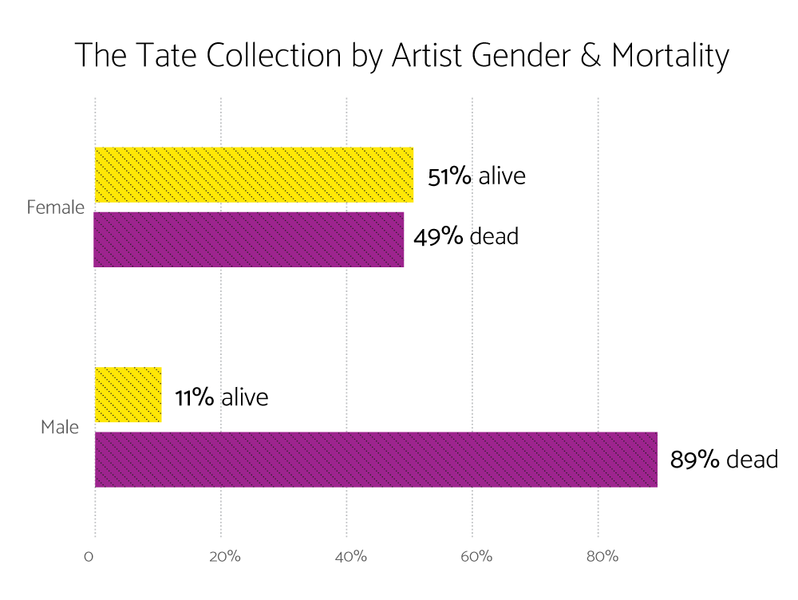
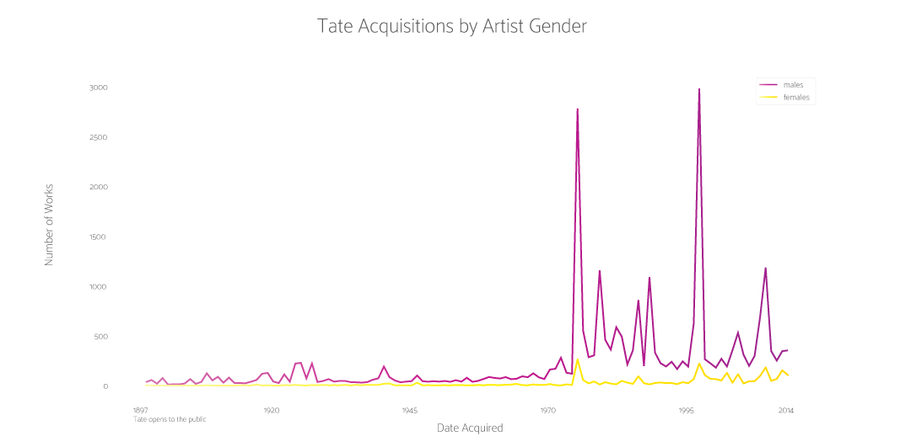
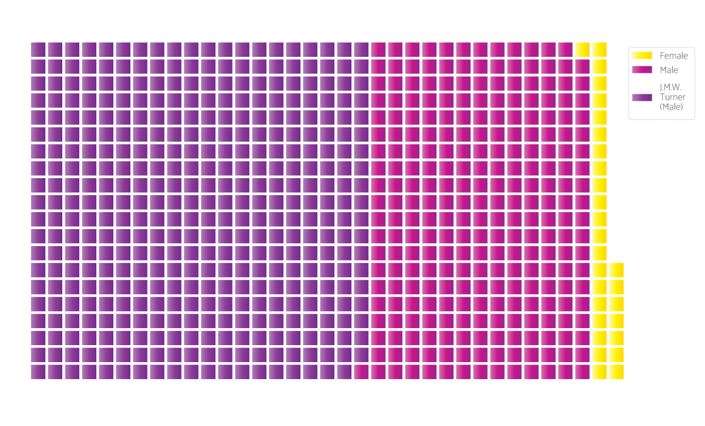

ART!
Angela Wang
Published July 27, 2018
After focusing my previous project on the gender diversity of artists in MoMA's collection, I've decided to look into other high profile art institutions. (This is the last art-museum-gender project from me for this class, I swear! Unless the Met makes more of their data available... in which case, I would love to answer the age old question posed by the Guerilla Girls: "Do women have to be naked to get into the Met Museum?")
The Tate seems like a pretty progressive museum: They even publish gender pay gap and diversity reports about their workforce. But does their collection reflect their stated values? A cursory analysis below shows that their collection is 96% male, 4% female. That's pretty bad. I'd like to look into their acquisitions over time, as well as what kinds of artists are represented in their collection.
How many of those works are by dead white men?
Most of the works by women are by women who are still alive. The same can't be said for works by male artists.

But the data may be skewed by J.M.W. Turner
At nearly 40,000 artworks, the Tate owns the single largest collection of works by romantic painter J.M.W. Turner. This is skewing all of my matplotlib charts to some degree.
The data show that most of the Turners were acquired in 1856, the year Turner's will was executed. His finished works were bequeathed to the state, eventually housed in an institution funded by sugar magnate Henry Tate. The Tate officially opened to the public in 1897 -- so let's look at the gender split of acquisitions made after that point.
Tate Acquisitions by Gender Over Time
Since 1897, when the Tate opened to the public.

Without fail, the Tate has always acquired significantly more art by male artists than female artists.
Taking the disproportionately large number of Turner works into consideration, it's worth looking at the gender split of the entire collection again.
The Tate Collection by Gender
And by whether the artist is J.M.W. Turner or not.
NOTE: Each square represents 100 artworks.
Even without considering J.M.W. Turner's works, the archive is overwhelmingly male.
Basically: If you're an artist who wants to get into the Tate's permanent collection, try being a man -- or J.M.W. Turner.